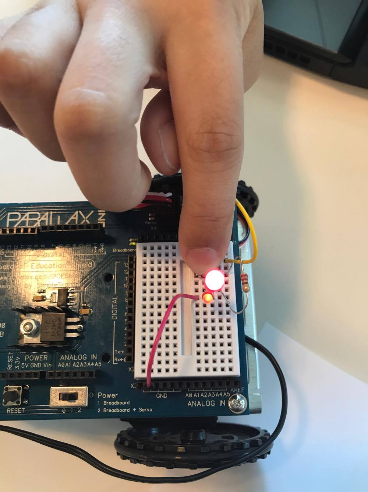

Today, I learned about Arduino and how we use C language on tihs platform for electronic devices. I learned about arrays and how they are  
a collection of variables that are used with an index number, just like a list in python. 
1 comment that I recieved during the gallery that I really liked was a question about the random lights we did. They were wondering if it 
was a random function or if we manually did it. It is nice to know that people are interested in how we accompished something! 

